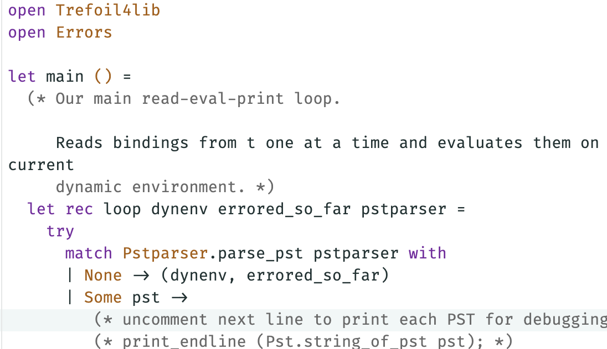
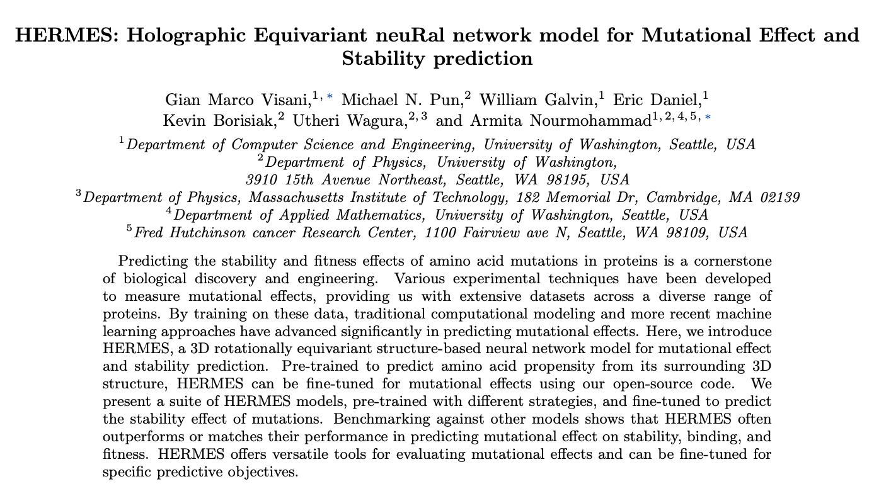
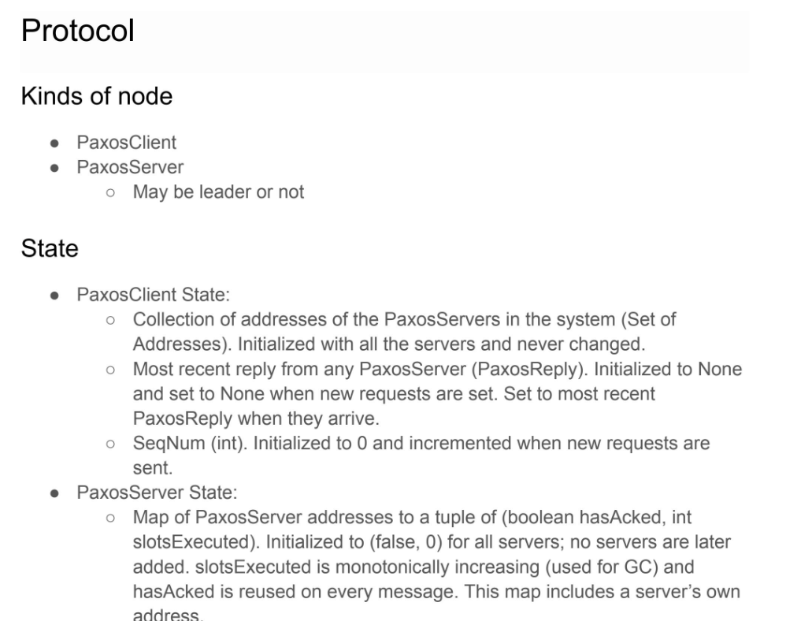

This was my final project in my programming languages course. We were able to create our own interpreter for a simple programming language called trefoil. After the quarter from hell it was meaningful to me to have some fun again in computer science, and to be able to create something that was my own.
This is some of the most important code that I had ever seen. This is part of the kernel of the operating system that we were building in my operating systems course. This code is responsible for scheduling processes on the CPU. Once I learned about process scheduling, I was pretty satisfied with the course. Even though I don't plan on working in operating systems, I find it very interesting and I have found the low level understanding useful.
Over my junior year, I was able to focus a lot more on my research in the Statistical Physics of Evolving Systems Lab. I worked with a PhD student in computer science, Gian Marco Visani. In the lab, I met and learned from some of the smartest people I have ever had the privilege to be around. I was so scared in the first group meeting we had, when each student would go over what they were working on, and the math and biology made it sound like they were speaking a different language. But, I perservered, got more comfortable, and started asking questions when I didn't understand things (which was all the time). I had been interested in computational biology since I first heard about it from my biology teacher in eighth grade. Gian Marco was doing physics inspired machine learning to solve protein structure problems, and I was able to build on my initial knowledge in machine learning and math to help build HERMES. It was a real privilege to work with these smart people and it feels amazing to be able to point at a ML model and paper as something I helped create.
In my computer networks course, we used Mininet to simulate networks in one of our projects. This artifact shows some of the code to simulate a network. I did enjoy the course, but the most memorable part was my TA. I would ask follow up after follow up question to him, and he would even stay after section to work out the answer with me. His example inspired me to TA for the same course in my senior year.
I loved taking distributed systems. This artifact shows one of the many design documents myself and my project partner wrote for the projects in this course. We spent most of the time making jokes and laughing, but every now and then we would focus up and do some excellent work. My project partner has since become an amazing friend.
In my machine learning research work, I could tell my math foundations were shaky. I decided to take advanced multivariable calculus to shore up my understanding. However, I found the course to be very disappointing, as it was mostly computational and my understanding of math was not improved. This artifact shows some of the almost rote computation I learned to do. Luckily, I decided to rectify this by taking a more theoretical course in the following fall.